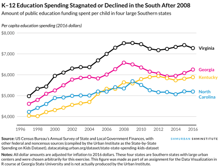

Enhancing graphics
For this exercise you’ll practice using vector editing software to enhance and refine a plot to make it publication-worthy. You’ll use data on state-level spending on children from 1997–2016. The data was collected by the Urban Institute from a variety of government sources. You already used this data in Exercise 6.
You don’t need to worry about any data manipuluation or code or anything. I’ve given you all the code you need to run. Instead, your job is to take a ggplot plot and enhance it, following the guidelines from an organizational visual style guide. You’ll use Illustrator, Inkscape, or some other vector editing program to recreate this image:

The example page for this week will be helpful!
As always, if you’re struggling, please use Discord and talk to me and your classmates! Don’t suffer in silence!
Instructions
The instructions for this are a little different from past exercises. Read everything below carefully!
1. Getting started
The plot uses the Lato font for all text elements. Download it from Google Fonts and install it on your computer. If you’re on Windows, right click on the font file and install it as an administrator.
Open the project either on your computer or in Posit.cloud
-
10-exercise.zip: If you’re using R on your own computer, download this file, unzip it, and double click on the file named10-exercise.Rproj - Posit.cloud project: Use this link if you’re using Posit.cloud in your browser
-
Rename the Quarto file named
your-name_exercise-10.qmdto something that matches your name and open it in RStudio.Run the chunks in the document to generate
base_plot.pdfandbase_plot.svg. You don’t need to write or modify any code.
2. Enhancing and refining
Once you have a base plot file, you’ll use a vector editing program (see this page for more information about what’s available—there’s a free option!) to enhance and refine it.
You should follow the guidelines in the Urban Institute’s data visaulization style guide. In particular, pay attention to these sections:
- Chart typography and sizing
- Chart parts, especially the “In print” section
- Color
- Line charts
Also, glance through that style guide in general. They talk about almost everything we’ve covered (or will cover) in this class, including good design principles, different chart types, specific rules and guidelines to follow with different types of plots, etc. It’s a really neat example of all this data visualization stuff in the real world!
To save on typing, I’ve included all the text and and other files you need in a folder named “assets” inside the main project. Open assets/details-and-content.md to access all the text and use the fake Shmurban Shminstitute logo (assets/fake-logo.svg).
Edit the base plot in Illustrator, Inkscape, or some other vector editing program. Do not use Canva—it is not a vector editing program. Here are some helpful resources and instructions for Illustrator and Inkscape:
- Create a new document that is 6.25 inches wide and some number of inches tall (this is adjustable later, so you don’t need to be exact).
- Open the PDF
base_plot.pdfin as a separate document in Illustrator. - Select all the elements in
base_plot.pdf, copy them, and paste them into your new empty document. Do all your design and enhancing work in this new document, not inbase_plot.pdf, since that will get overwritten every time you re-render the Quarto document. - Make all your edits and add the logo and do whatever else you want to follow the organizational style guide and generaly enhance the plot.
- Before exporting the finished version, make sure you resize your artboard to match the size of the plot (see this short tutorial). The final plot should be 6.25 inches wide and the height of the content in the image (this will vary depending on how you lay out the text).
- Go to File > Export > Export for Screens… to export your artboard to both PDF and high resolution PNG (see this short tutorial).
- Create a new document. Use the “document pages” tool at the bottom of the side toolbar to change its dimensions to 6.25 inches wide and some number of inches tall (like 6 or7; this is adjustable later, so you don’t need to be exact). See this short tutorial for how to do this.
- Open the SVG
base_plot.svgin as a separate document in Inkscape - Select all the elements in
base_plot.svg, copy them, and paste them into your new empty document. Do all your design and enhancing work in this new document, not inbase_plot.svg, since that will get overwritten every time you re-render the Quarto document. - Make all your edits and add the logo and do whatever else you want to follow the organizational style guide and generaly enhance the plot.
- Before exporting the finished version, make sure you resize your document to match the size of the plot. The final plot should be 6.25 inches wide and the height of the content in the image (this will vary depending on how you lay out the text). Use the “document pages” tool to either type in a new height or drag the handles of the page to resize it. Again, see this short tutorial
- Go to File > Export and then select the “Batch Export” tab to export your document to both PDF and high resolution PNG (see timestamp 2:15ish here for how)
3. Finishing up
Place the exported image in the same folder as your
.qmdfile and include it in your document. Add images with Markdown syntax like this (This is not R code! Don’t put this in an R chunk!):blah blah here's some text  blah blah here's some more textRender your Quarto document as a Typst (pdf), PDF, or Word version.
Upload three (3) things to iCollege:
- Your rendered
.qmdfile with your check-in and the exported image included in it - A standalone PNG version of your exported image
- A standalone PDF version of your exported image
- Your rendered